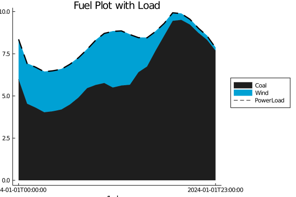
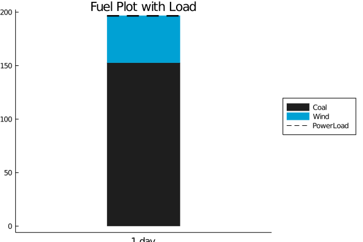
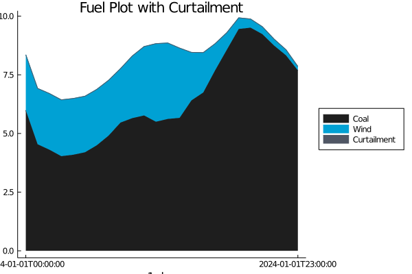
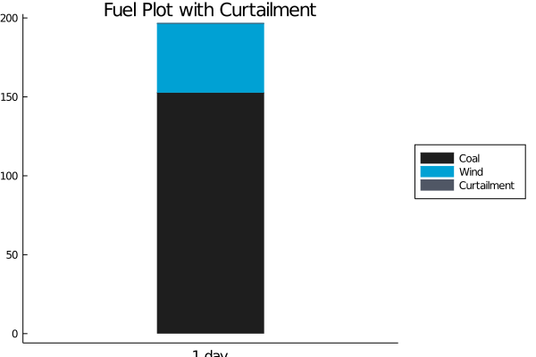
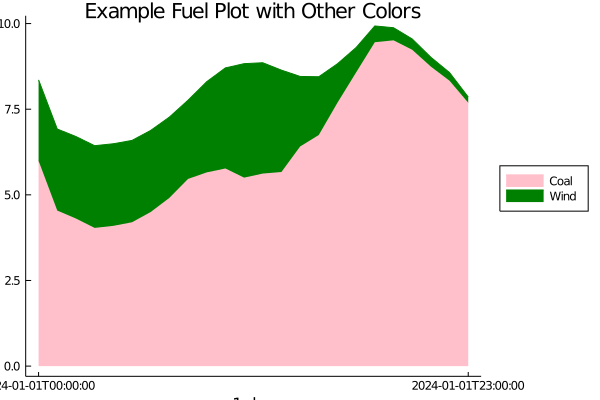
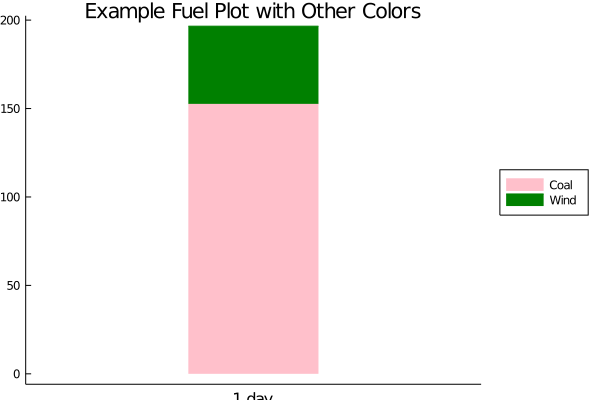
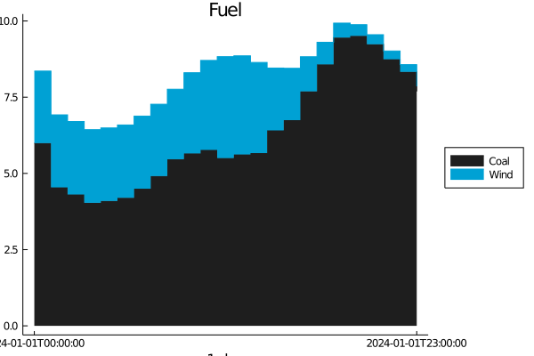
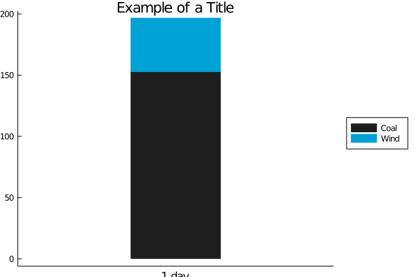

How to Make a fuel plot
See How to set up plots to get started
Define a system and solve for results
use the Power Simulations package
to set a Power Systems system and solve a problem.
using PowerGraphics
using PowerSystems
const PSY = PowerSystems
const PG = PowerGraphicsMake fuel plots of the results
fuel_plot(results, system)Make fuel plots with a load line
fuel_plot(results, system; load = true)

Make fuel plots with a curtailment line
fuel_plot(results, system; curtailment = true)

Set different colors for the plots
colors = [:pink :green :blue :magenta :black]
fuel_plot(results, system; seriescolor = colors)

Create a Stair Plot, instead of interpolating between values
fuel_plot(results, system; stair = true)
Set a title
title = "Example of a Title"
fuel_plot(results, system; title = title)
For saving the plot with the PlotlyJS backend, you can set a different format for saving
fuel_plot(results, system; save = path, format = "html")Default format for saving is png. Optional formats for saving include png, html, and svg.
Alternatively, set up a dictionary of the desired sorting method using make_fuel_dictionary()
For example, if the generators are to be sorted by a different method than the default fuels
Categories = Dict{String, NamedTuple}(
"coal" => NamedTuple{(:primemover, :fuel)}, (PSY.PrimeMovers.ST, PSY.ThermalFuels.COAL),
"oil" => NamedTuple{(:primemover, :fuel)}, (PSY.PrimeMovers.ST, PSY.ThermalFuels.DISTILLATE_FUEL_OIL))
generators = make_fuel_dictionary(results, system; Categories = Categories)
fuel_plot(results, generators)This page was generated using Literate.jl.